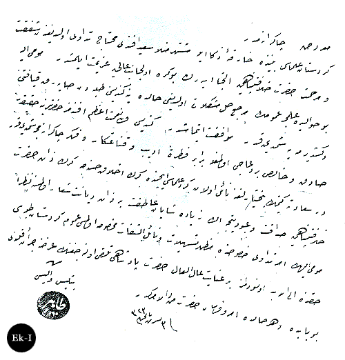
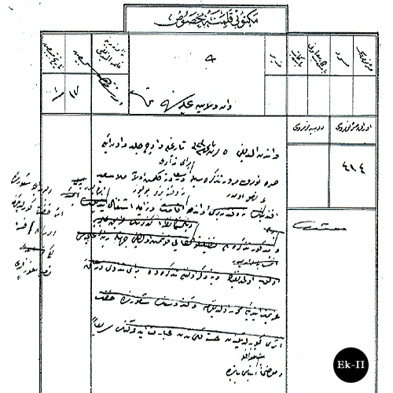

|
Bediüzzaman'ýn tedavi için Ýstanbula gidiþi |
  
|
|
Bediüzzaman'ýn tedavi için Ýstanbula gidiþi |
|
Bitlis Valisi Tahir Paþa'nýn, II. Abdülhamid'e yazdýðý 16 Kasým 1907 tarihli tezkirede, Bediüzzaman'ýn zeka ve ilminden, padiþaha baðlýlýðýndan bahsettikten sonra hastalýðý için Ýstanbul'a geldiðinden söz ederek, yardýmcý olunmasýný istemektedir. Bu tezkire bize Bediüzzaman'ýn Ýstanbul'a geliþi hakkýnda bilgi verdiði gibi, Doðu Anadolu'da Bediüzzaman'a nasýl bakýldýðýný göstermesi bakýmýndan da önemlidir. (Selim Sönmez)
Tahir Paþa'nýn Bediüzzaman'ýn tedavisi hakkýnda II. Abdülhamid'e yazdýðý tezkire

Ma'ruz-u çâkerânemdir,
Kürdistân ulemâsý beyninde hârika-i zekâ ile meþhur Molla Said Efendi muhtac-ý tedâvi olduðundan þefkat ve merhamet-i hazret-i hilâfetpenâhiye ilticâ ederek bu kere ol-cânibi âliye azimet eylemiþtir. Mumaileyh bu havalide ilimce umûmun merci'i hal-i müþkilâtý olduðu halde yine kendisini talebeden sayarak kýyafetini deðiþtirmeye þimdiye kadar muvâfakat etmemiþtir. Kendisi veliyyülnimet-i a'zim efendimiz hazretlerine hakikaten sâdýk ve hâlis bir duâcý olmakla beraber fýtraten edip ve kanâatkâr ve fikr-i çâkerânemce þimdiye kadar Dersaadet'e gitmek bahtiyârlýðýna nâil olan Kürd ulemâsý içinde gerek ahlâk-ý hasenece gerek Zât-ý Hazret-i Hilafetpenâhiye sadâkat ve ubûdiyetçe alâ ziyâde þayân-ý âtýfet bir zât-ý diyânet þiâr olmasýna nazaran, mumaileyhima emr-i tedavi hususunda mahzar-ý teshilât ve nâil-i iltifât-ý mahsûsa olmasý umum kürdistan talebesi hakkýnda ilelebed unutulmaz bir inayet-i âl'el-âl hazreti padiþahi telakki olunacaðýnýn arzýna cür'et kýlýndý. Bu babda ve her halde emrü ferman hazreti menlehül emrindir.
3 Teþrinisani 1323
Bitlis Valisi Tahir
BOA., Y.PRK.UM., nr.80/74, 10 Þevval 1325/16 Kasým 1907.

Bediüzzaman'ýn yukarýdaki tezkire tarihini müteakip Ýstanbul'a geldiði anlaþýlmaktadýr. Çünkü, Zaptiye Nezareti'nden Van Valiliði'ne gönderilen aþaðýdaki tezkirede, Bediüzzaman'ýn tedavi için Ýstanbul'a geldiðinden bahsedilerek, Van'daki hayatý hakkýnda bilgi istenmektedir. Bu bilgi bize Bediüzzaman'ýn zaptiye ile alakalý bir durumu olduðunu göstermektedir. Çünkü istenilen bilgide ne ile iþtigal ettiði, ne vakitten beri Van'da ikamet ettiði, rütbe-i ilmiyesinin olup olmadýðý gibi sorular sorulmaktadýr. (Selim Sönmez)
Bediüzzaman'ýn Van'daki hayatý hakkýnda bilgi istenmesi

Mektubî Kalemine Mahsus:
Van Vilayet-i Âliyesi'ne,
Van'dan aldýðý 5 Teþrinisani 1323 tarihli ve üç cild ve 12 sýra numaralý tezkiresiyle berây-ý tedâvi Dersaadet'e gelmiþ olan Molla Said Efendi Van'da ne vakitten beri bulunur ve ne ile iþtigal ediyor. Ve buraca þuurunda eseri hiffet görüldüðünden orada hastalýðý nasýl bulunur idi. [Ettiðinin ve mezkur tezkirenin faziletli elkabý konmuþ olduðu cihetle rütbe-i ilmiyesi olup olmadýðýnýn ve yine zikr olunan tezkirede berây-ý tedâvi Dersaâdet'e azimet ettiði muharrer olduðundan ve kendisinin þuurunun hiffet eseri görüldüðünden hastalýðýndan ibaret idiðünün] Serian ve muvazzýhen inbasý babýnda.
BOA., ZB., 618/64, 18 Kasým 1907.